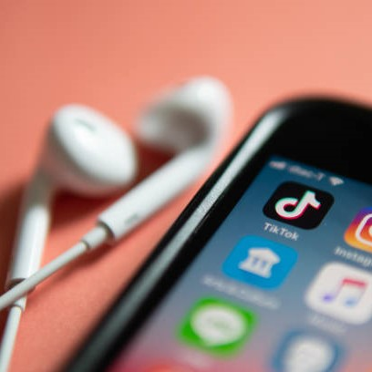

През по-голямата част от последните две години приказките за пълна забрана на TikTok като че ли са намалели. TikTok оцеля при администрацията на Тръмп и популярността му само продължи да расте. Това беше най-тегленото приложение в Съединените щати миналата година, според анализаторската компания Sensor Tower, и остава най-тегленото приложение от началото на годината 2022 г. По този начин TikTok, който заяви, че има 100 милиона потребители в САЩ към 2020 г., стана още по-важен за американската култура и поминъка на влиятелни хора и собственици на бизнес като Гудуин.
Но внезапно бъдещето на TikTok в Съединените щати изглежда по-несигурно от всякога от юли 2020 г. Все по-голям брой републикански губернатори наскоро обявиха забрана на TikTok за държавни служители на правителствени устройства, включително само в четвъртък от няколко щата. Главният прокурор на щата и представителят на Републиканската партия във Федералната комисия по комуникациите оказват натиск върху Apple и Google да предприемат по-строги действия срещу приложението. И трима американски законодатели, водени от сенатор Марко Рубио, най-добрият републиканец в комисията по разузнаване на Сената, внесоха законопроект по-рано тази седмица, който отново има за цел да блокира TikTok в САЩ поради базата на компанията майка в Китай.